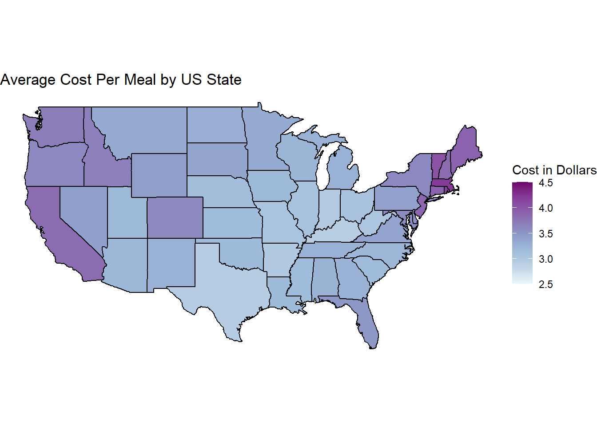
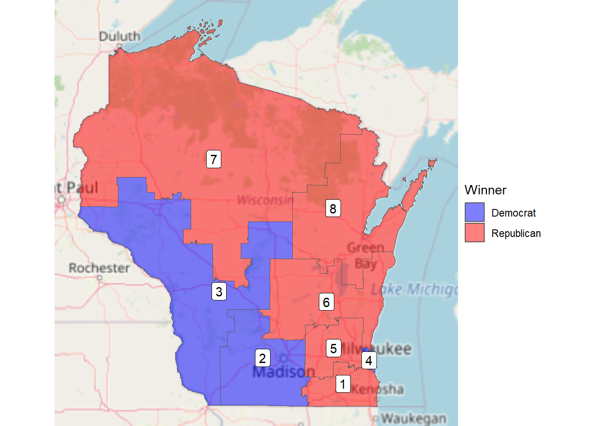
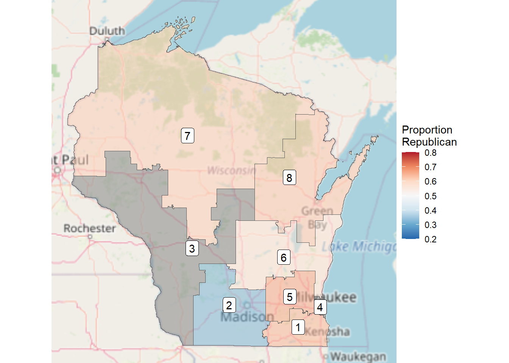

Mini-Project 1
February 28th, 2024
US States
Introduction
The dataset that I found to join with our US states data is from the Urban Data Catalog. This data aims to measure the intersections of climate change, food system resilience, and racial equity. Variables measured include household food insecurity rates, costs per meal, percentage of households receiving SNAP, agricultural production, and percentage of households with low store access. A full pdf with variable definitions can be found here.
Map
I chose to make my map measuring the average cost per meal in each US state.
Summary
From this map, we can visualize that high meal costs correlate more strongly with states on the coasts of the US. Costs range from about $2.90 to $4.50. Average meal prices are highest in District of Columbia, Massachusetts, and Rhode Island. Lowest prices are in Kentucky, Texas, and Indiana. The following tables show the exact average costs for the five highest and five lowest states.
| state_name | avg_cost_per_meal |
|---|---|
| district of columbia | 4.490000 |
| massachusetts | 4.201429 |
| rhode island | 4.174000 |
| vermont | 4.045714 |
| connecticut | 3.906250 |
| state_name | avg_cost_per_meal |
|---|---|
| kentucky | 2.906000 |
| texas | 2.930669 |
| indiana | 2.950761 |
| arkansas | 2.972533 |
| west virginia | 3.021818 |
Wisconsin Districts
Introduction
In February of 2024, Wisconsin’s governor signed an act that will begin the process of redistricting. Wisconsin’s districts have been considered some of the most gerrymandered districts in the country, since the districts were decided in 2011. This has cemented a republican majority, even if they represent close to, or even less than 50% of voters. This new map of congressional districts may change the results of following elections in Wisconsin.
Maps
The following two maps show the election results in the house of representatives in 2016. This first one shows which party won in each district.

The second map shows the margins by which the party won that district.

Summary
In these maps, particularly the second one, it can be seen that republicans had close margins in their races, sometimes winning by only a little over 50%. This is best seen in district 6. Democrats are clustered more heavily in districts 2 and 3. How these margins will change with new congressional district lines will be interesting with the coming 2024 election.